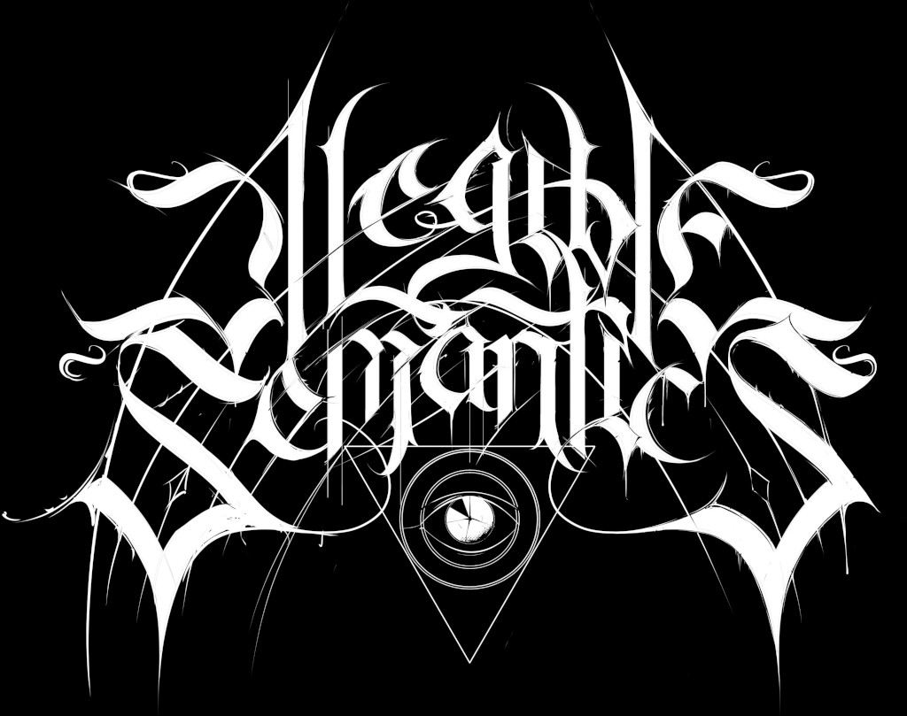

Illegible Semantics: Exploring the Design Space of Metal Logos

Venue. alt.VIS (2021) Workshop Paper
Authors. Gerrit J. Rijken, Rene Cutura, Frank Heyen, Michael Sedlmair, Michael Correll, Jason Dykes, Noeska Smit
Abstract. The logos of metal bands can be by turns gaudy, uncouth, or nearly illegible. Yet, these logos work: they communicate sophisticated notions of genre and emotional affect. In this paper we use the design considerations of metal logos to explore the space of “illegible semantics”: the ways that text can communicate information at the cost of readability, which is not always the most important objective. In this work, drawing on formative visualization theory, professional design expertise, and empirical assessments of a corpus ofmetal band logos, we describe a design space of metal logos and present a tool through which logo characteristics can be explored through visualization. We investigate ways in which logo designers imbue their text with meaning and consider opportunities and implications for visualization more widely.